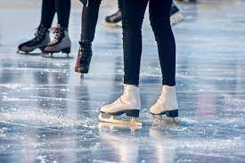
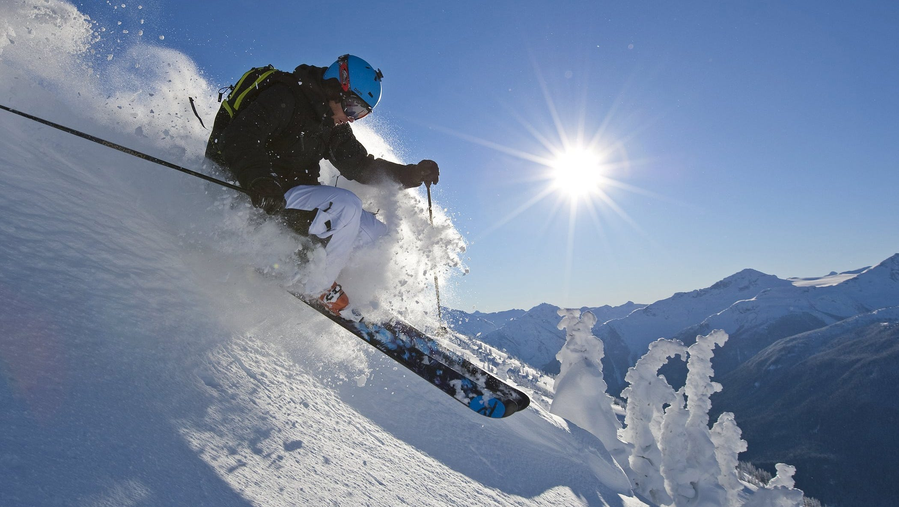
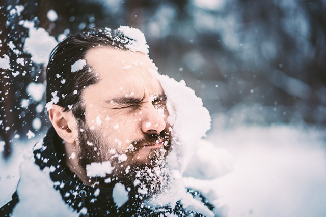
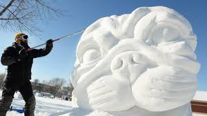

Slidošana
Slidošana ir cilvēka pašpiedziņa pāri ledus loksnei, izmantojot ledus slidas ar metāla asmeņiem, lai slīdētu pa ledus virsmu. Šo darbību var veikt dažādu iemeslu dēļ, ieskaitot atpūtu, sportu, vingrošanu un ceļošanu. Slidošanu var veikt uz speciāli sagatavotām ledus virsmām (arēnās, trasēs, parkos) gan telpās, gan ārpus tām, kā arī uz dabiski sastopamām sasaluša ūdens tilpnēm, piemēram, dīķiem, ezeriem un upēm.
Papildinformācija

Slēpošana
Slēpošana ir sportiska aktivitāte un sporta veids, kurā slēpotājs ar slēpju palīdzību pārvietojas pa sniegu. Slēpošana tiek izmantota arī militāros nolūkos, kā arī, lai pārvietotos vietās, kur ir bieza sniega sega. 1924. gadā tika nodibināta Starptautiskā Slēpošanas federācija, kas atbild par visiem slēpošanas sporta veidiem, izņemot biatlonu. Populārākie slēpošanas veidi ir distanču slēpošana, kalnu slēpošana, tramplīnlēkšana, ziemeļu divcīņa, frīstaila slēpošana, snovbords.
Papildinformācija

Pikošanās
Pikošanās ir fiziska spēle, kurā sniega bumbas tiek mestas ar nolūku trāpīt kādam citam. Spēle savos galvenajos faktoros ir līdzīga tautas bumbai, lai gan parasti tā ir mazāk organizēta. Šī aktivitāte galvenokārt tiek veikta ziemā, kad ir pietiekami daudz sniega.
Papildinformācija

Sniega skulptūru veidošana
Sniega skulptūru veidošana jeb Sniega māksla ir skulptūru veids, kas ir salīdzināms ar smilšu skulptūrām vai ledus skulptūrām, jo lielāko daļu no tām tagad praktizē brīvā dabā, un bieži vien skatītāju priekšā, tādējādi dažu acīs to padarot par uzstāšanos. Materiāli un instrumenti ļoti atšķiras, taču bieži vien tie ietver tādus rokas instrumentus kā lāpstas, cirvjus un zāģus.
Papildinformācija
